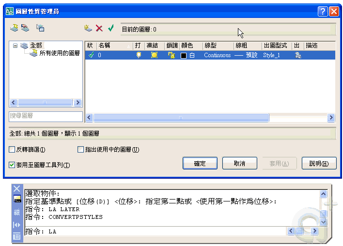

一般使用的出圖習慣都是沿用傳統的方式 顏色相關的出圖型式表 (CTB)，而其他領域有不同的需求而使用顏色已無法滿足需求，所以才會開發 具名的出圖型式表 (STB)，所以依領域需求 AutoCAD 提供轉換的功能滿足需求，所以你只需將設定變更回來即可。以下回答及補充供大家參考，有問題請再提~
問:我使用的是CAD 2006 版 ，在出圖型式中有分 *.stb 及 *.ctb 兩種副檔名的格式，請問他們有何不同及差別呢？
答. AutoCAD 的出圖型式表有 CTB檔 及 STB檔 兩種格式：
CTB檔 是指顏色相關出圖型式表，用以 顏色 來決定出圖之筆寬。
STB檔 則是依照 物件性質 包含出圖型式及其 特性，如同一顏色的物件文字或線段可有2種筆寬。
※圖面可以使用 具名出圖型式 或 顏色相關出圖型式，但是不能二者都使用。
問:可是當我在使用2006的時候，卻發現某些圖檔無法自訂或修改出圖型式 ( 只能使用 *.stb 格式 )？
答:因為圖面一開始即設定使用 具名出圖型式(STB)，所以編輯定義筆寬的方式不太一樣，你可使用 CONVERTPSTYLES 指令將 目前圖面 轉換回 顏色相關出圖型式(CTB)。

-----------------------------------------------------
※補充※
將與顏色相關的出圖型式表 (CTB) 轉換成具名的出圖型式表 (STB)。
將目前圖面轉換為具名出圖型式或顏色相關出圖型式。
◆在轉換圖面時，CONVERTPSTYLES 指令將系統變數 PSTYLEMODE 設定為相應的設定 (0 = 具名 ， 1 = 顏色相關)。
控制出圖型式選項。 出圖型式是出圖型式表內所定義的性質設定值集合，可於圖面出圖時套用。 使用「選項」對話方塊來變更預設出圖型式設定值，不會影響目前圖面﹔僅影響新圖面或在舊版 AutoCAD 中建立的圖面 (這些圖面未曾以 AutoCAD 2000 或更高版的格式來儲存)。
◆預設的出圖型式設定值是「使用與顏色相關的出圖型式」。 依預設，「性質」工具列中的「出圖型式控制」不可用。 當您選取「使用具名的出圖型式」選項，並開啟一個新圖面時，可以使用「出圖型式控制」。 (系統變數 PSTYLEPOLICY)
2012-05-03補充影片操作：
一張DWG圖只能套用一種出圖型式，因為只能選用（ctb）或（stb），而預設圖面都是使用顏色控制筆寬（ctb），顏色控制筆寬就是說圖層紅色就是唯一筆寬，如果圖上的「牆壁」使用紅色，那麼圖上的「文字」就不能使用紅色，因為文字筆寬會太粗。
如果說圖面中規定必須「牆壁」及「文字」的圖層顏色都必須使用紅色，此時就可以先輸入CONVERTCTB 指令，將目前使用的顏色相關的出圖型式表(CTB)，轉換成具名的出圖型式表 (STB)，再來透過CONVERTPSTYLES指令，變更圖面中使用的出圖型式表類型，也就是將圖檔的筆寬設定為具名出圖型式（stb），然後依照圖層名稱定義出圖型式，即可控制圖筆粗細。